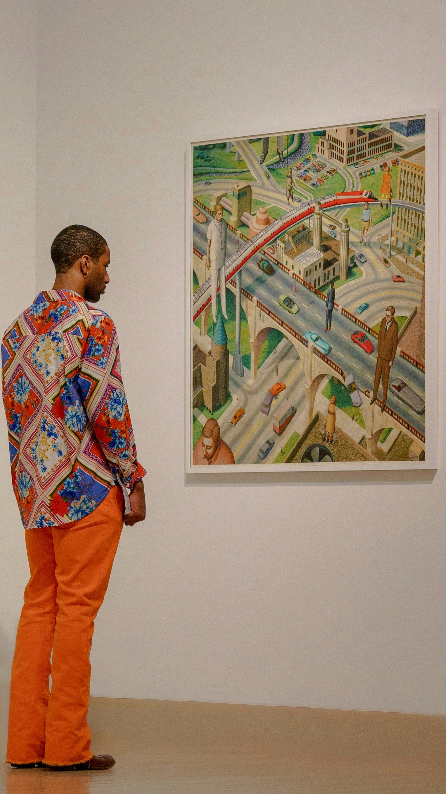
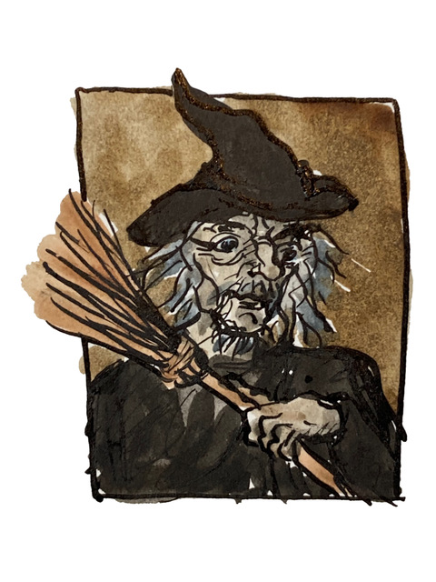

Visual Design and Web Project Assignment 1 - Image 4
Objective
Create a web-optimised picture of a man viewing a picture of a witch, inspired by Oscar Wilde's “The Picture of Dorian Gray” (1890).
The Process
The starting point was an image of a man viewing a painting in an art gallery taken from Unsplash. Photo by ade

The witch is one of eight original watercolours provided by Rachel Mulligan as a JPEG for the Web Witchcraft and Wizardry project.

The images were manipulated in Krita. The manipulations consisted of removing the original painting from the Unsplash photograph, desaturating the witch to convert it to grayscale, mirroring it to face in the right direction, placing it in the frame, stretching it to match the target perspective and clipping it to fit.
A stretch goal, which was not attempted due to time constraints, would be to change the pattern on the man's shirt to thematically chime with the witch, in the same way the original matches the geometry and orange of the original painting.
The Krita file, which can be accessed here, was exported in both WEBP and a JPEG (with progressive loading) formats. The WEBP file is the preferred format for the web, but the JPEG file is included as a fallback for browsers that do not support WEBP.
The Result